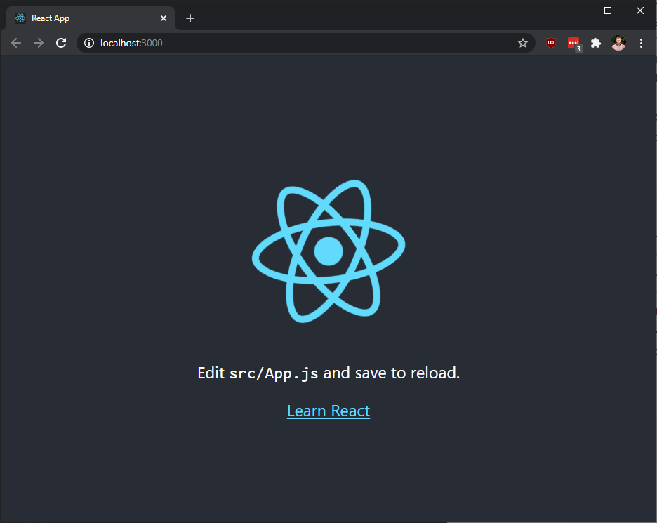
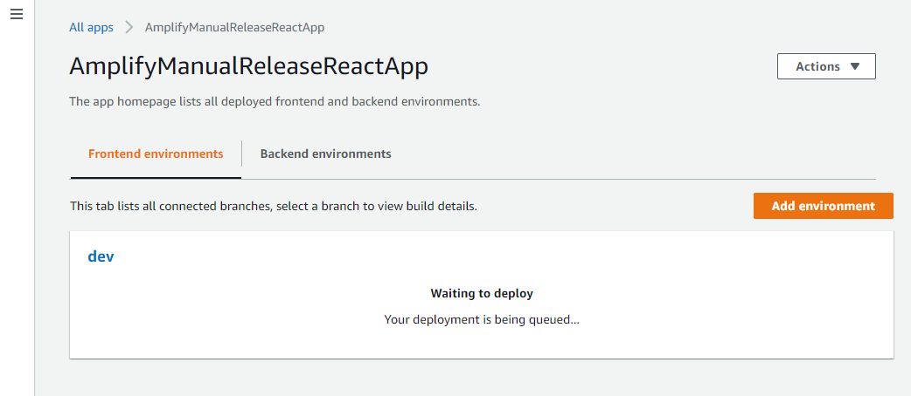
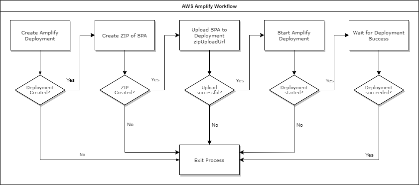
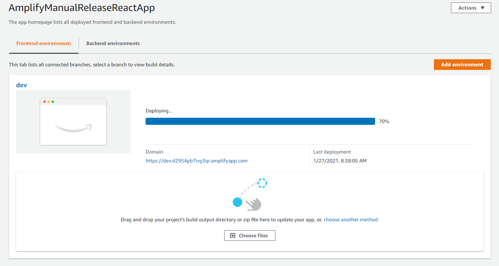
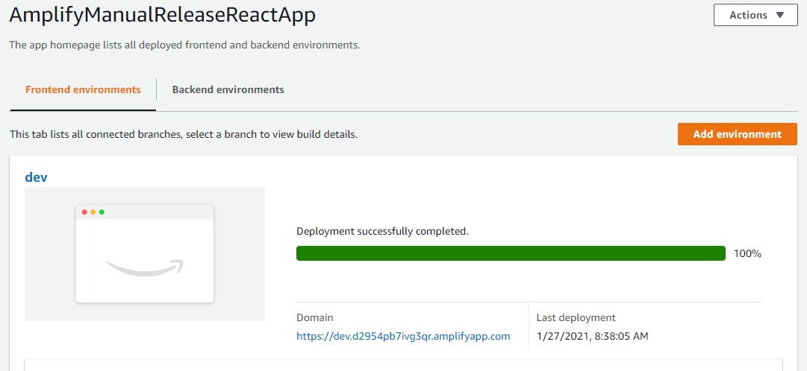

How to quickly use the AWS Amplify console for hosting your single-page-application (SPA).
The AWS Amplify console for hosting allows a SPA to circumvent the complicated resource graph (eg: S3 buckets, additional IAM policies, other Amplify resources). It also includes some sensible conventions for handling HTML pushState to send the browser redirects to /index.html.
Ultimately, this guide is for developers that want to quickly create simple SPAs and have them hosted on AWS Amplify with as little friction as possible.
Make sure the local environment has these features:
aws --versionnode --versionsls --versionStart by creating the react app:
npx create-react-app quick-react-spa
Make sure it works:
cd quick-react-spa
npm run start
The browser will open and should display a page that looks like this.

Build it:
npm run build
Note that the SPA output is in the /build folder.
In order to host a SPA on AWS Amplify, one must first create the AWS Amplify App resource, and a Branch related to that Amplify App.
service: quick-react-spa
provider:
name: aws
region: ${opt:region, 'us-east-1'}
stage: ${opt:stage, 'dev'}
resources:
Resources:
AmplifyApp:
Type: AWS::Amplify::App
Properties:
Name: AmplifyManualReleaseReactApp
CustomRules:
# requests for files that match this regex but don't exist will
# redirect to /index.html to accommodate pushState in JavaScript apps
- Source: '</^((?!\.(css|gif|ico|jpg|js|png|txt|svg|woff|ttf)$).)*$/>'
Target: /index.html
Status: 200
AmplifyBranch:
Type: AWS::Amplify::Branch
Properties:
AppId: !GetAtt AmplifyApp.AppId
BranchName: ${self:provider.stage}
# we will build the app ourselves
EnableAutoBuild: false
Outputs:
AmplifyApp:
Value:
Ref: AmplifyApp
Once the resources are created, note that the AWS Amplify Management Console will have appear to be waiting for deployment activity.

Now that the Amplify Console is waiting for deployment activity, one can deploy the local SPA to the AWS Amplify Console using the AWS CLI.
Here is a brief overview of the process.

In order to create the deployment, the AWS CLI will need an appId and a branchName.
Once the deployment is created, one can use the zipUploadUrl to POST a ZIP of the SPA.
After the ZIP has been uploaded, the AWS Amplify Console will take a moment to mount the contents to the Amplify Branch.
Note the AWS Amplify Management Console indicating a deployment has started:

Note the AWS Amplify Management Console indicating the deployment is complete:

In short, the inputs needed are:
ZIPappIdbranchNameThe npm package amplify-manual-release simplifies this process into a simple CLI.
In the react spa, add the amplify-manual-release package.
npm i -D amplify-manual-relase
Then, in the root of the react spa, create a file .atgprc with the values for your AWS Amplify app.
{
"appId": "AMPLIFY_APP_ID",
"branchName": "AMPLIFY_APP_BRANCHNAME",
"inputFolder": "build",
"region": "us-east-1"
}
While all these values are optional, some of them may not change.
Next, invoke the amplify-manual-release package by adding it to the scripts section of package.json.
{
... other props
"scripts": {
... other props
"release": "amplify-manual-release"
}
}
In the react app folder, one can invoke the release script.
npm run release
It's possible to override the values in .atgprc using the command line.
npm run release -- --appId OVERRIDE_APP_ID --branchName OVERRIDE_BRANCH_NAME
Using this package to deploy to AWS Amplify will yield the following output:
$ npm run release -- --appId MY_APP_ID
---
yarn run v1.22.10
$ amplify-manual-release --appId MY_APP_ID
Attempt to load config from .atgprc
Found config. {
appId: 'AMPLIFY_APP_ID',
branchName: 'AMPLIFY_BRANCH_NAME',
inputFolder: 'build',
region: 'us-east-1'
}
Creating zip archive buffer
Creating amplify deployment
Created deployment: jobId: 1
Creating http request to PUT archive in deployment URL
Starting amplify deployment
Demployment started, waiting for job to succeed
job complete
Done in 18.73s.
And now the app is available on AWS Amplify. Enjoy!